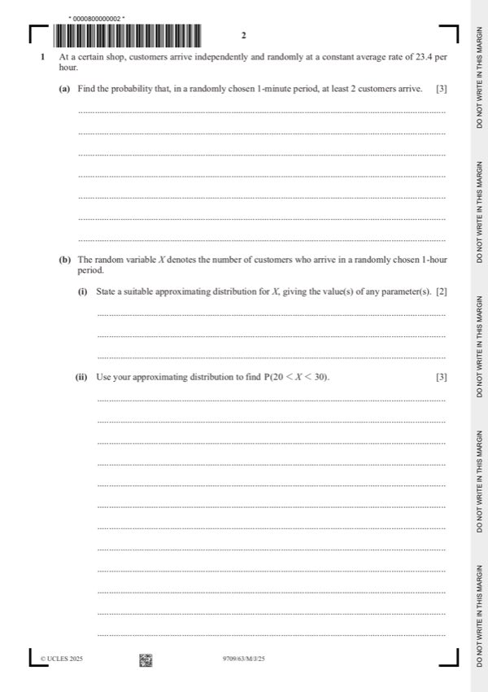
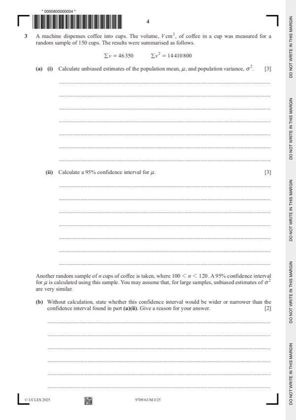
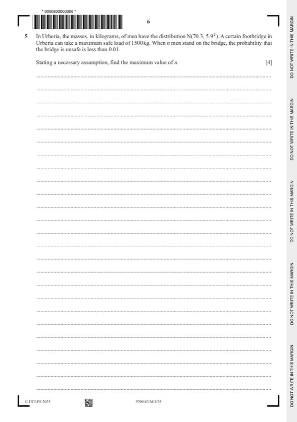
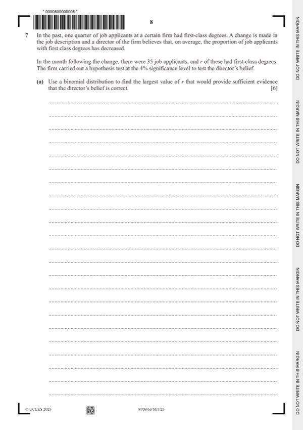

Question 0
Part 0 — solution
- [A1] Correct integration
- [A1] Convincingly obtained. No errors seen
Mark points
- [A1] Correct integration
- [A1] Convincingly obtained. No errors seen
Step-by-step solutions based on the mark scheme (not a mark-scheme dump).
Part 0 — solution

Part 1(a) — solution
Part 1 — solution
Part 1 — solution
Answer: 463502 · 149 150
Part 1 — solution
Part 1 — solution
Part 1 — solution
Answer: 2b 2
Part 1 — solution
Part 2 — solution
Part 2(a)(i) — solution
Part 2(a)(ii) — solution
Part 2 — solution
Part 2 — solution
Part 2 — solution
Part 2 — solution
Part 2 — solution
Part 2 — solution
Part 2 — solution
Part 2 — solution
Answer: b2
Part 2 — solution
Answer: 9 4
Part 2 — solution
Part 2 — solution

Part 3 — solution
Part 3 — solution
Part 3 — solution
Part 3(a)(i) — solution
Answer: 150
Part 3(a)(ii) — solution
Answer: 150
Part 3 — solution
Part 3 — solution
Answer: 2
Part 3 — solution
Answer: 2 · b2
Part 4(a) — solution
Part 4(b) — solution
Part 4 — solution

Part 5 — solution
Part 6(a) — solution
Part 6(b) — solution
Answer: 2 · b 0
Part 6 — solution

Part 7(a) — solution
Part 50 — solution
Part 60 — solution